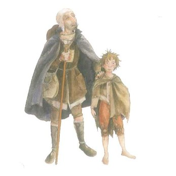

El Lazarillo de Tormes
Aquí está el enlace a la versión adaptada que vamos a leer y con la que vamos a trabajar: El Lazarillo de Tormes (adaptación)

Pero si prefieres leer una versión sin adaptar, te recomiendo esta de la biblioteca virtual Miguel de Cervantes.
¿Te apetece descubrir algunas curiosidades sobre esta obra? Aquí tienes por dónde empezar.
Y este vídeo - resumen te puede ayudar a no olvidarte de nada importante.